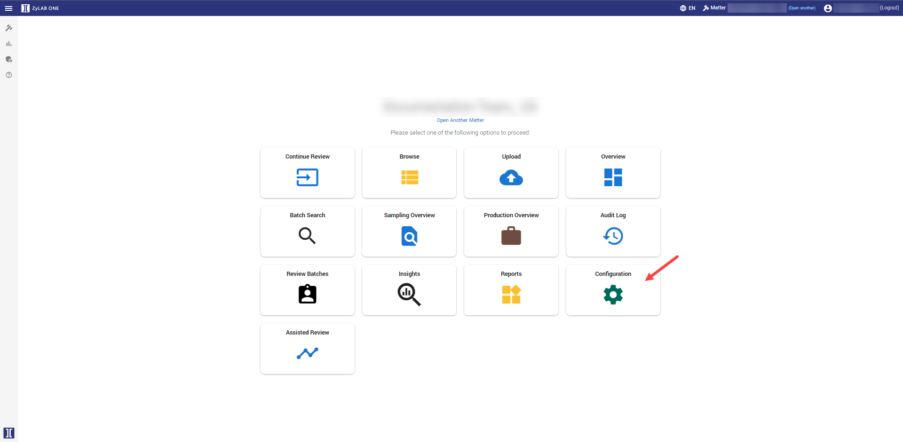
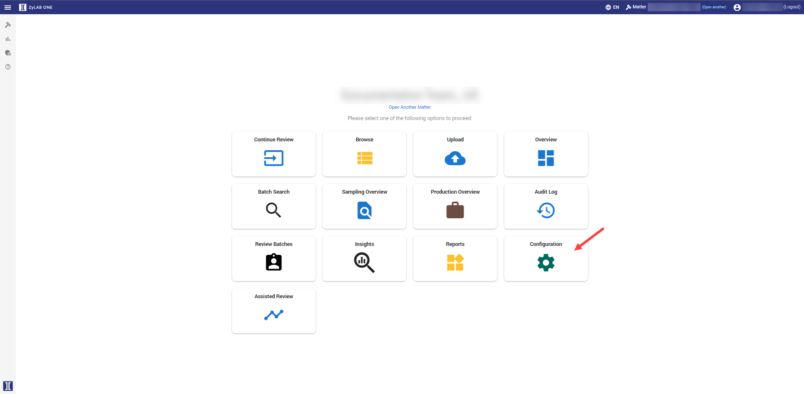
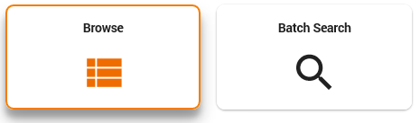
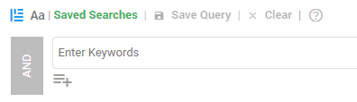
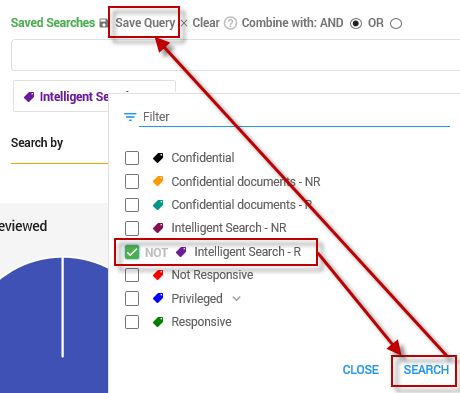
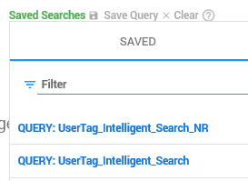

The tags Intelligent Search - R and Intelligent Search - NR are created via ZyLab ONE > Configuration > Tags.
These are sample tags. R = Responsive and NR = Not Responsive.


Instructions
Description
Start your Intelligent Search with a query for specific documents. After your search, open the documents from Document List one by one. In Document View, review and tag the documents as responsive or not responsive. Tags can be created upfront or an existing tag can be used.
Prerequisites
The tags Intelligent Search - R and Intelligent Search - NR are created via ZyLab ONE > Configuration > Tags. These are sample tags. R = Responsive and NR = Not Responsive. 
Instructions
Define a query via Browse > Search field, or import multiple queries via Batch Search.
 
For information on defining search queries, see the ZyLAB ONE Search Language Guide.
Open the first document from your result list and review it.
Tag the document as Intelligent Search - R or Intelligent Search - NR.
Navigate to the next document until all documents from your search have been tagged.
Create two saved searches:
One with the tag Intelligent Search - R. Note: Do not add a full text query to your saved search. 
One with the tag Intelligent Search - NR. Note: Do not add a full text query to your saved search. You will have two saved searches with the tag Intelligent Search (Responsive and Not Responsive). 
Continue with Add and Start a Project in Assisted Review.